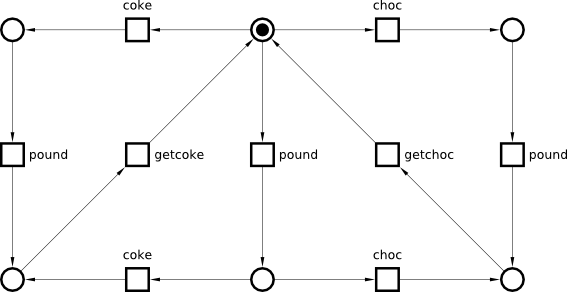

Table of Contents
Petri net synthesis: Concurrent vending machine
Exercise 1: Concurrent vending machine
The following FSM models a Concurrent Vending Machine that allows the user to insert a £1 coin (action pound) concurrently with making an order (actions coke and choc). Note that the concurrency between actions pound and coke as well as pound and choc is represented by interleaving – there are two corresponding diamonds in this FSM, and the layout is chosen so as to highlight them. Re-create it in Workcraft.

Simulate your model to make sure that the concurrent actions can happen in any order, and that the Vending Machine processes the orders correctly.
Formally verify whether the FSM
- has deadlocks
- has unreachable states
- is reversible
- is deterministic
Exercise 2: From FSM to PN and back
Simple conversion
FSMs can be considered as a special case of Petri nets where each transition has exactly one incoming and one outgoing arcs and the initial marking consists of one token. In particular, any FSM can be automatically converted to a Petri net by replacing its states with places, arcs with transitions, and putting a single token on a place corresponding to the initial state. Perform this conversion in Workcraft using the Conversion→Petri Net menu item:

Simulate your model and make sure that it is equivalent to the above FSM model, in particular the executions are the same. Also, formally verify that it is still deadlock-free (the other properties given above for the FSM either do not make sense in the Petri nets context, or are not supported yet). Pragmatically speaking, this Petri net model does not offer any advantage over the original FSM model:
- It is larger than the original FSM (if we take the total number of nodes and arcs as the measure).
- Concurrency is still modelled as interleaving. Note that modelling concurrency by interleaving is natural in FSMs, but unnatural in Petri nets, where concurrent transitions would be a superior way of modelling concurrency.
PN synthesis
A better Petri net can often be obtained from the initial FSM model by the process called synthesis. It is a much more complicated procedure than the one outlined above, but it can be automated. Starting from the original FSM, synthesise a Petri net with the same reachability graph as this FSM using the Conversion→Net synthesis [Petrify] menu item. Note that the result is a Petri net with all places explicitly shown. To hide places with exactly one incoming and one outgoing arc one can convert the model to an STG via Conversion→Signal Transition Graph, and then use Transformations→Make places implicit menu item to hide such places, and Transformations→Straighten connections (selected or all) to make all the arcs in the model straight. You can then further improve the layout manually, as shown below. Note that transitions pound and coke as well as pound and choc are now truly concurrent.

Simulate this Petri net, to make sure that it is equivalent to the original FSM model, and formally verify its correctness properties.
Reachability graph
Construct the reachability graph of this Petri net (Conversion→Finite State Transducer (basic) [Petrify] menu item). Make sure that this reachability graph is the same as the original FSM (you will need to do manual layout to make it look like the original FSM).
Feedback
- As discussed in https://www.dokuwiki.org/plugin:include#controlling_header_size_in_included_pages, by default, the headers in included pages start one level lower than the last header in the current page. This can be tweaked by adding an empty header above the include:\\
====== ====== {{page>:tutorial:feedback&inline}} - For offline help generation the content of
feedbackpage should be temporary wrapped in<WRAP hide>. Note that the headers still propagate to the table of contents even if inside the hidden wrap. Therefore the Feedback title needs to be converted to something else, e.g. to code by adding two spaces in front.